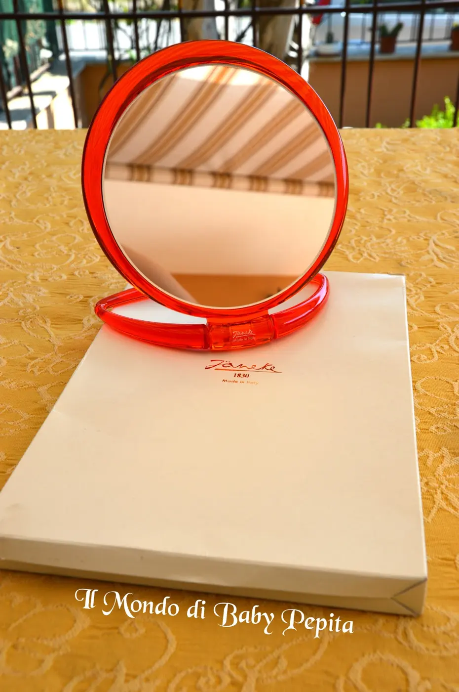
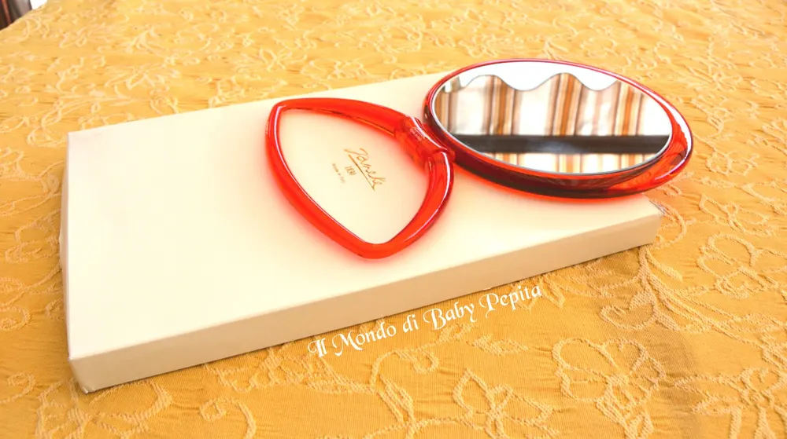
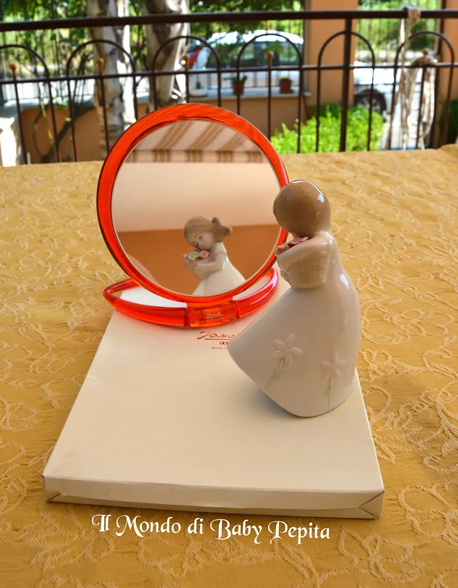
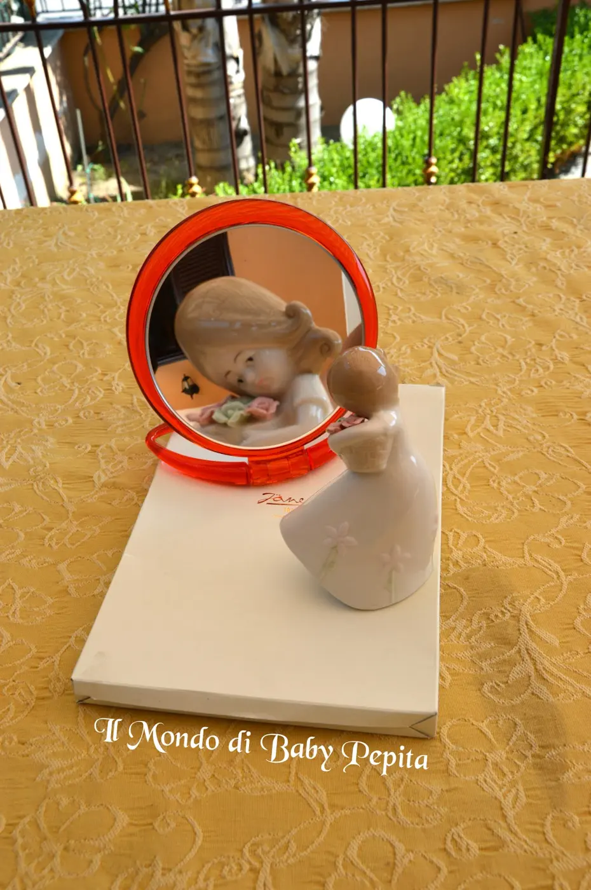

Janeke - Lo specchio che ti specchia tutti i pregi :D
Appuntamento della settimana con Janeke Non voglio dilungarmi tanto nelle introduzioni ma voglio passare direttamente all'articolo in questione:specchio da appoggio

Chi ormai non ha un specchietto da appoggio per le sopracciglia, makeup, farsi la pulizia del viso ecc ecc.?Beh, la Janeke mi ha inviato questa settimana questo stupendo e resiste specchio da toilette .Dal materiale marrone trasparente, è un accessorio lussuoso, con un manico alla base che lo rende completo in tutto in modo da inclinarlo, appoggiarlo o appenderlo come meglio ci troviamo.

 La cosa che ho notato quasi in tutti gli specchi Janeke è che cerca di soddisfare l'esigenza in tutto e per tutto, infatti, come nello specchietto da borsetta che vi parlai il mese scorso, anche questo ha un lato normale e l'altro lato che ingrandisce.
La cosa che ho notato quasi in tutti gli specchi Janeke è che cerca di soddisfare l'esigenza in tutto e per tutto, infatti, come nello specchietto da borsetta che vi parlai il mese scorso, anche questo ha un lato normale e l'altro lato che ingrandisce. 
Praticissimo se vogliamo vedere i nostri difettucci hahahah, i punti neri e peli superflui, che con l'estate e l'abbronzatura sono più visibili.

 Ritengo questo prodotto davvero utile per ogni donna, se poi come me ne fate uso per truccarvi è ancora più utile (sono diventata cecatella :D ).Il link diretto per acquistare questo bellissimo e lussuoso specchio è: http://janeke.it/prodotto/specchio-trasparente-da-tavolo-cod-80443-3-tra-tra/?v=cd32106bcb6dPrezzo: 62,70 €Sito Janeke: http://janeke.it/?v=cd32106bcb6dPagina Facebook: https://www.facebook.com/janeke1830/?fref=ts
Ritengo questo prodotto davvero utile per ogni donna, se poi come me ne fate uso per truccarvi è ancora più utile (sono diventata cecatella :D ).Il link diretto per acquistare questo bellissimo e lussuoso specchio è: http://janeke.it/prodotto/specchio-trasparente-da-tavolo-cod-80443-3-tra-tra/?v=cd32106bcb6dPrezzo: 62,70 €Sito Janeke: http://janeke.it/?v=cd32106bcb6dPagina Facebook: https://www.facebook.com/janeke1830/?fref=tsIn quanto a me seguitemi:FACEBOOKINSTAGRAMTWITTER